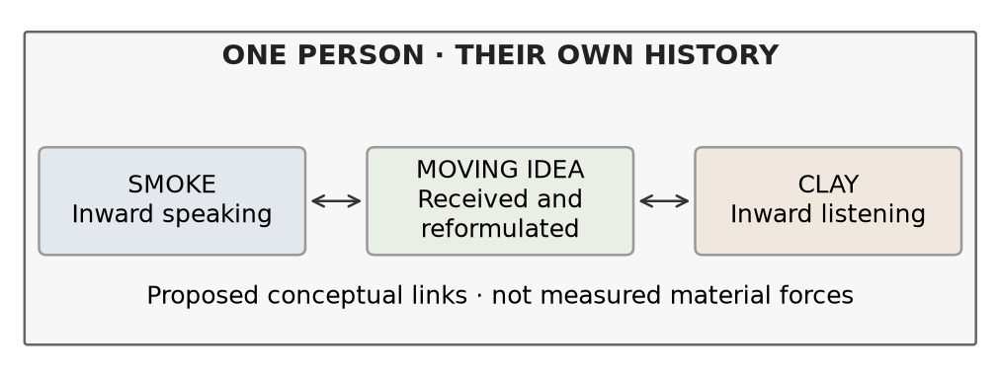
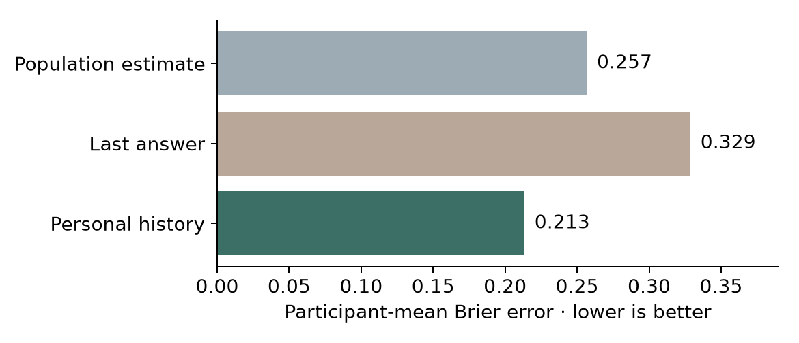
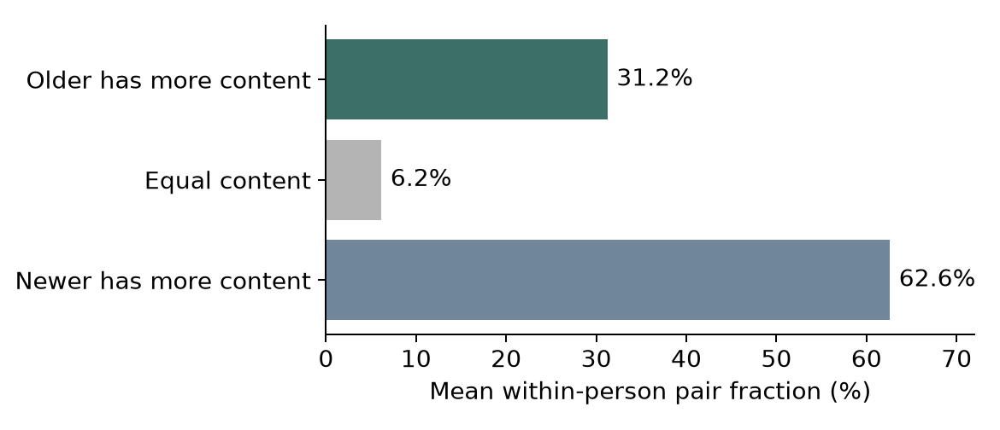

Streams and Rocks | Research protocol and completed public data checks | 22 October 2026
Purpose: test how an idea moves within one person, how inward speaking and listening affect it, and how that person’s history enters the process. This document fixes the current interpretation, reports two completed measurement probes, and supplies forms for the observations still missing.

Smoke is the inward speaking position. Clay is the inward listening position. The middle is the idea moving between them. Both positions can change what is retained, questioned, reformulated or refused. These are functions within one person, not two people or permanent personality classes.
Each person has a distinct history. Keep recorded events, remembered versions and what is recalled now separate. Missing history stays unknown. A clear childhood memory and a dreamlike recent memory are both admissible observations.
The completed checks use real public records of inner experience and recalled memory content. They support narrowly stated associations. They do not measure the full Smoke–Clay–idea exchange or validate the corpus field equations as a model of thinking. The proposed diary study has not been run.
Arendt’s two-in-one provides a philosophical connection, while Smoke, Clay and the moving middle are this project’s interpretation. Her gadfly, midwife and electric-ray images describe different effects of thought. Peace can contain active thought; disturbance is not automatically failure. [1]
Use participant descriptions first and distinguish interpretation from measurement
| Term | Working description | Record separately |
|---|---|---|
| Smoke | Inward speaking | The proposition put forward and its wording, image or nonverbal form |
| Clay | Inward listening | What is received, held, challenged, revised or refused |
| Moving idea | Content changing between positions | Before and after accounts; which claim, target, implication or force changed |
| Mist | Internalized or unspoken agreement | Agreement, assumptions and freedom to reconsider |
| Fog | Remembered past with variable clarity | Content, vividness, certainty and independently checkable accuracy |
| Wind | Space between memories and experienced time | Actual event age, recall duration and felt temporal distance |
| Perceived balance | Calm or agreement may coexist with disturbance | Calm, agreement and unresolved tension as separate ratings |
| Water | Adaptation where this word fits | What changed, what persisted and what that change cost |
D₂O is the author’s image for perceived balance. H₂O₂ is a different substance; its specific role in this interpretation remains undefined. Leave peroxide unassigned until the author supplies its intended relationship. No chemical properties become psychological causes by analogy.
Retain coercion, resistance, refusal, pressure and conflict when they express the reported experience. Attribute the account and state the comparison still needed. Do not automatically soften strong language or infer a diagnosis from it. Participants may reject any material description or report no distinguishable inner positions.
Do not score calm as healthy or disagreement as compromised. A peaceful exchange can change an idea; agreement can leave tension unresolved. These possibilities must be recorded rather than decided by the labels.
Public inner experience reports | Observational prediction | Not a causal memory test
Nedergaard, Skewes and Wallentin’s original and replication experiments repeatedly sampled experience during a task. The processed files contain 1,696 reports from 212 people and 2,664 reports from 222 people. Among reports of an inner voice, people rated whether it was dialogic. Other experience reports are structurally missing for this outcome, not negative answers. [2]
The original experiment alone selected the history weight from five declared choices. The replication supplied 632 later qualifying predictions from 142 people with sufficient reports. Each prediction used only that person’s earlier qualifying answers. Every eligible person receives equal weight in the error summary.

| Comparison | Mean difference | 95 percent participant bootstrap interval |
|---|---|---|
| History minus population | −0.043 | −0.070 to −0.015 |
| History minus last answer | −0.115 | −0.151 to −0.081 |
The stricter “Agree only” sensitivity also favored history: 0.145 error versus 0.178 population and 0.209 last answer. These intervals condition on the selected predictor; they do not include uncertainty from every earlier modeling choice.
Interpretation: recorded personal history improved this prediction. Stable response habits or personal differences could produce the advantage without a causal effect of earlier thought on later thought. No lifelong biography, separate internal roles or idea content was observed. The replication was reserved for tuning in this analysis, but the published study was consulted; it is not an untouched model-selection holdout.
Public CRAM records | Counted recalled content | Not verified vividness or accuracy
The CRAM dataset dates memories to ten fractions of a person’s life and counts content in eight categories. Bin 0 is most remote and bin 9 most recent. This analysis retained 12,982 complete, single-bin scored memories from 4,115 people. Of these, 1,052 people had both remote memories (bins 0–7) and recent memories (bins 8–9). [3, 4]

Recent memories contained 7.02 more counted elements on average within people, with a 95 percent participant bootstrap interval of 5.63 to 8.65. Requiring at least two memories in each range retained 703 people and gave a difference of 6.16 elements, interval 4.94 to 7.34.
Nevertheless, older memories had more counted content in 31.25 percent of within-person pairs on average, interval 29.57 to 32.90 percent. Equal content accounted for 6.16 percent. An average age association therefore does not justify making every older memory less detailed by definition.
Content counts do not establish how clear, truthful or dreamlike a memory feels. The data do not follow the same memory changing over months and do not measure the author’s Wind construct. Rehearsal, event importance and recall selection could explain differences. The inner-speech and CRAM datasets contain different people and were not joined.
Exclusions were explicit: 23,390 rows lacked scored content; 1,258 had a non-single or invalid bin; two had invalid content values. The source’s 14,242 scored memories are broader than this declared single-bin complete-case sample. No values were silently repaired.
Proposed feasibility study | Not yet recruited or run
A practical starting design is 20 consenting adults, three brief prompts per day for 14 days, plus optional event entries. This is a feasibility target, not a power calculation or a representative population claim. Keep random-prompt and self-selected entries distinct. Allow skipping and “no inner exchange” without treating either as failure.
Ask about the experience immediately before the prompt, then allow a brief follow-up at the next prompt. Record the delay between the experience and the report. Do not require people to create a dialogue, force a metaphor, or disclose private events. The act of reporting may itself change thought; measure that perceived effect.
| Question | Comparison and observation | What could challenge it |
|---|---|---|
| Does the idea move? | Pair before/after formulations of the same episode; code preservation, revision, rejection or uncertainty | Reports lack identifiable transitions, or coders cannot distinguish content change from rephrasing |
| Does personal history help? | Predict later episode outcomes from earlier reports; compare population, last answer and personal-history baselines | No held-out gain, or gain disappears when stable person differences are controlled |
| Can balance conceal tension? | Measure calm, agreement and unresolved tension independently in the same episode | Ratings fail to separate these constructs, or agreement consistently coincides with low tension |
| Is felt distance different from age? | Record dated event age and felt temporal distance alongside vividness and rehearsal | Felt distance adds no repeatable information beyond measured event age and context |
Meaning check: the participant first identifies the intended claim and any change. Two independent reviewers then code claim, target, implication and force, blinded to the outcome being tested. Preserve disagreements. Similar words, matching embeddings or a shared topic alone do not establish the same meaning.
Select analysis choices using only a development group. Reserve whole participants for generalization and later time blocks for within-person forecasting; report these as different tests. Choose the final sample size after estimating feasible completion and within-person dependence, before opening confirmatory outcomes.
Copy one sheet per episode | Use a private participant code | A blank is not a zero
| Field | Entry |
|---|---|
| Participant code and episode ID | ________________________________________________ |
| Report time and estimated experience time | ________________________________________________ |
| Context and prompt type | Random prompt / self-selected entry / follow-up ________________________________________________ |
| Experience before the prompt | Words / images / nonverbal / no exchange / uncertain ________________________________________________ |
| Smoke and the initial idea | What was put forward? Preserve wording or describe the image. ________________________________________________ ________________________________________________ |
| Clay and the inward response | What was heard, held, challenged, reshaped or refused? ________________________________________________ ________________________________________________ |
| Idea after the response | What changed or remained? Same claim / rephrased / revised / rejected / uncertain ________________________________________________ ________________________________________________ |
| History recalled now | Private event ID(s), remembered account and relevance ________________________________________________ |
| Independent ratings from 0 to 4 | Calm __ Agreement __ Unresolved tension __ Vividness __ Certainty __ Freedom to reconsider __ |
| Time measures | Estimated event date or age __ Felt distance 0 near to 4 far __ Recall duration __ Date certainty __ |
| Reporting and follow-up | Did the prompt change the thought? __ Same idea at next prompt? __ Linked episode ID __ |
Rating anchors: 0 = not at all, 1 = slightly, 2 = moderately, 3 = strongly, 4 = very strongly. Use “unknown” and “not applicable” explicitly. These are proposed items, not a validated scale. Ask participants whether the wording captures their experience before a confirmatory study.
Link each episode to the person’s own records and remembered accounts
| History field | What belongs here |
|---|---|
| Private history ID | A local code connecting reports of the same event; no public name or identifying narrative |
| Event and estimated date | Participant account, date range and confidence; distinguish event date from report date |
| Independent record | Whether a contemporaneous record exists; unavailable is not false |
| Earlier remembered version | What was reported before, when, and by whom; keep the original version |
| Current retrieval | What is recalled now and what changed; do not overwrite earlier accounts |
| Importance and rehearsal | Current importance, frequency of recall and recent reminders, each separately recorded |
| Position-specific connection | Does the person connect this history to inward speaking, listening, both or neither? |
| Missingness and consent | Skipped, forgotten, unclear or not shared; permission for storage and analysis |
Predict before updating. At each episode, use only information recorded earlier. Keep the same person’s history separate from everyone else’s. Fit scaling, coding decisions and model parameters on development data only. Compare with a personal intercept or baseline to distinguish stable differences from changing history.
For a time-order claim, add a declared within-person order-shuffle control and a model using actual time gaps. A shuffled order may retain stable personal tendencies; if it predicts equally well, do not call the advantage evidence for temporal accumulation. Account for repeated observations by resampling people, not treating all episodes as independent.
A forecasting advantage is not a causal history effect. To test whether a specific reminder changes the next response, a separate consented randomized reminder design would need matched content, measured uptake, alternatives and a declared outcome. That experiment is proposed, not authorized or run here.
Store personal narratives privately, use local pseudonyms in analysis, and publish only consented de-identified derivatives. Keep participant accounts, researcher codes and model outputs in separate columns. Report refusals, missing entries and coding disagreement. Do not use the model to assign a diagnosis, moral rank or fixed material identity.
Exact equations remain intact | Observation links must be stated separately
The corrected corpus remains the mathematical source. Relevant equation groups are at paragraphs 229–230, 517–519 and 545–550. The accompanying MODEL.md reproduces the coupled momentum, incompressibility, field transport, threshold, accumulated-input and stress equations. The existing full-field solver has not been altered for these measurement probes.
| Fidelity requirement | Decision before a full-field test |
|---|---|
| Person-specific application | Define each person’s domain, units, inputs and observed boundary conditions; indexing by person is an application choice |
| Initial accumulated input | Preserve the corpus’s zero initial A; represent earlier history by an explicit pre-observation evolution or separately justified mapping |
| Direction and threshold | Retain the fixed direction e and the stated threshold law; do not replace it with damping or erase the tanh negative tail |
| Signed field and accumulation | Do not clip S or introduce automatic forgetting without declaring an added model |
| Observation model | Specify how recorded expressions, listening responses and idea changes map to fields and uncertainty |
| Identifiability | Test whether different parameter settings or omitted mechanisms make indistinguishable predictions |
Gate 1: participants understand the terms and can report the episode without being forced into the metaphor. Gate 2: content coding is repeatable and distinguishes rephrasing from changed meaning. Gate 3: the chosen model improves a declared outcome on reserved data against simple baselines. Gate 4: removing its distinctive mechanisms reduces performance. Gate 5: the result replicates in a new source or prospectively collected sample.
If a gate fails, report the failure and revise the relevant definition or measurement link. Once results have informed a revision, they become development evidence. New confirmatory data must then be collected or reserved elsewhere. Numerical convergence checks alone do not establish that a psychological mapping is correct.
Current status: public-data probes passed their numerical checks, but the full within-person field model has not passed these empirical gates. Earlier external-dialogue and moderation results remain useful historical comparisons; they do not observe this inner exchange.
SciSpace assisted discovery | Primary sources checked | No new human observations collected
[1] Arendt, H. (1971). Thinking and Moral Considerations. Social Research, 38, 417–446. Relevant discussion: 431–434 and 441–445. https://jonudell.net/h/arendt.pdf
[2] Nedergaard, J., Skewes, J., and Wallentin, M. (2023). “Stay Focused!” The Role of Inner Speech in Maintaining Attention During a Boring Task. DOI: 10.1037/xhp0001112. Data and analysis materials: https://osf.io/jgx7m/
[3] Autobiographical Memory Content and Recollection Frequency: Public Release of Quantitative Datasets and Representative Classification Analysis (2020). DOI: 10.5334/joc.105. CRAM dataset version 4: https://doi.org/10.6084/m9.figshare.10246958.v4. Public data license: CC0.
[4] Gardner and colleagues (2012). Quantitative Measurements of Autobiographical Memory Content. DOI: 10.1371/journal.pone.0044809. This source defines temporal youth bins and content scoring.
SciSpace located the CRAM sources and candidate measures of dialogical activity. The EEG dataset Thinking out loud (10.1038/s41597-022-01147-2) was screened out for this question: fixed commands do not track a moving autobiographical idea. IDAS-R (10.1080/10720537.2024.2446756) is a candidate instrument, not longitudinal evidence used here. Search summaries were not treated as completed validation.
The study folder contains PROTOCOL.md, protocol_freeze.json, sources.json, derived numeric data, analysis code, predictions, person-level summaries and figures. Raw free-text responses and original participant IDs are omitted. Source download URLs and SHA256 hashes are recorded. Install requirements.txt, then run:
python analyze.py
python -m unittest -q
python verify_saved.py
python build_document.py
Twelve unit tests and 23,604 saved-result checks passed. Bootstrap uncertainty uses 2,000 participant resamples and a fixed seed. The frozen protocol predates outcome calculation but follows source and schema inspection; it is not a registered preregistration. All script and source hashes are available in the published package.
The latest author corrections determine the interpretation. The original corpus and notes are preserved as source material. The testing document distinguishes author definitions, philosophical connections, added statistical comparators and empirical results.